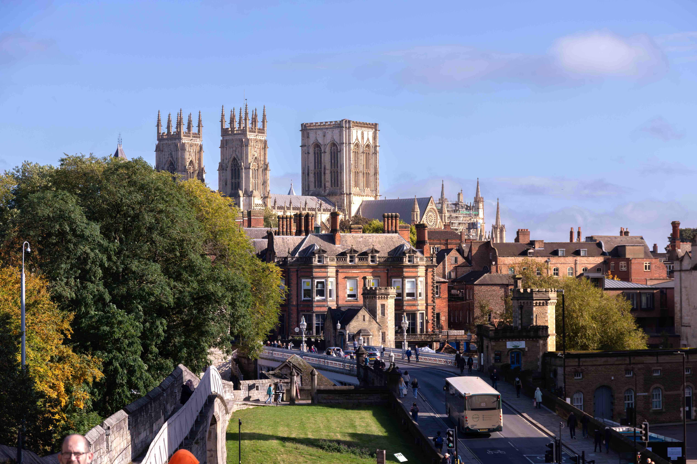

<!DOCTYPE html>
<html>
<head>
<meta charset="utf-8">
<title>Photo Map</title>

<link rel="stylesheet" href="https://unpkg.com/leaflet/dist/leaflet.css"/>

<style>
#map{
height:100vh;
}
body{
margin:0;
}
</style>
</head>

<body>

<div id="map"></div>

<script src="https://unpkg.com/leaflet/dist/leaflet.js"></script>

<script>

var map = L.map('map').setView([54,-2],5);

L.tileLayer(
'https://tile.openstreetmap.org/{z}/{x}/{y}.png',
{
maxZoom:19
}
).addTo(map);

L.marker([53.959,-1.081])
.addTo(map)
.bindPopup(`
<b>York</b><br>
Roman, Viking and medieval city.<br>

`);

</script>

</body>
</html>
